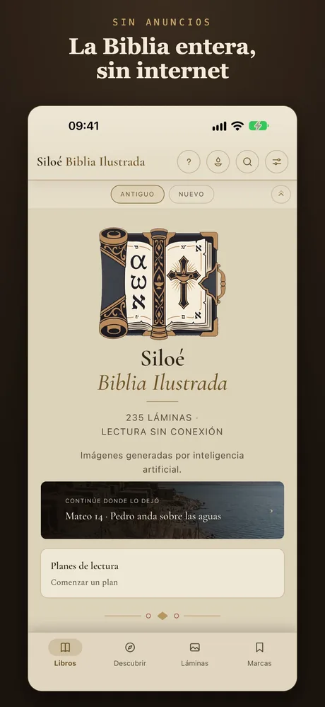
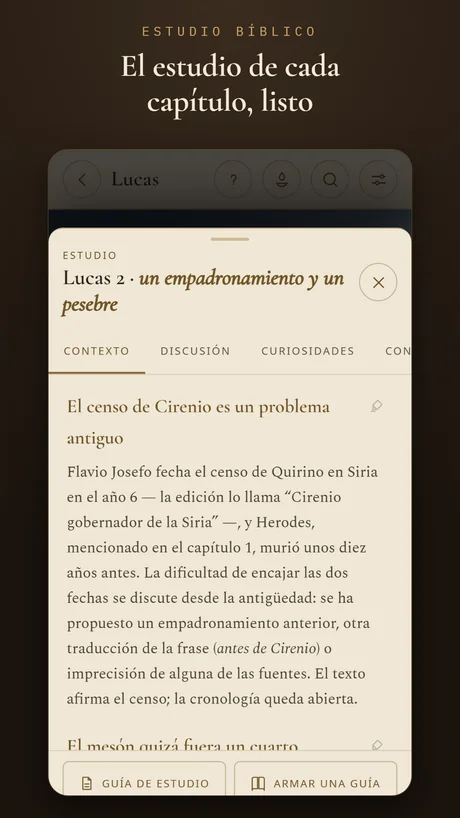
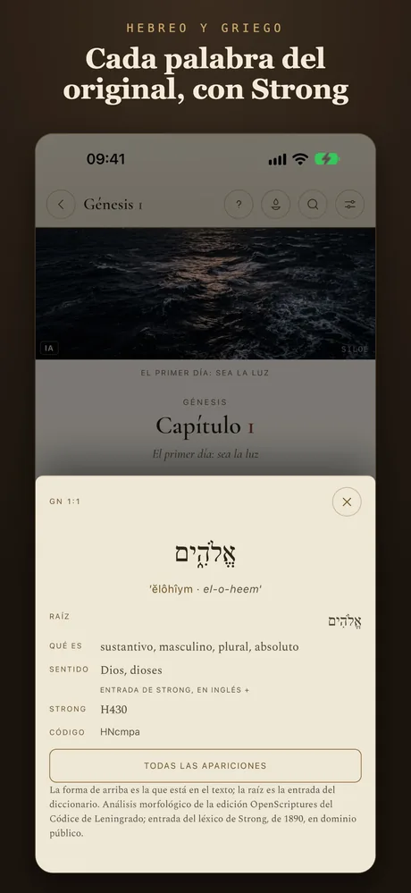
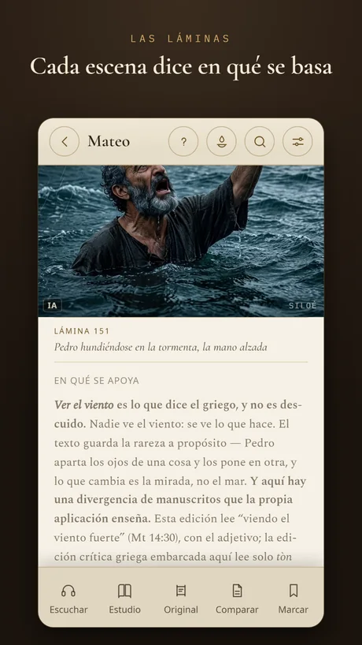
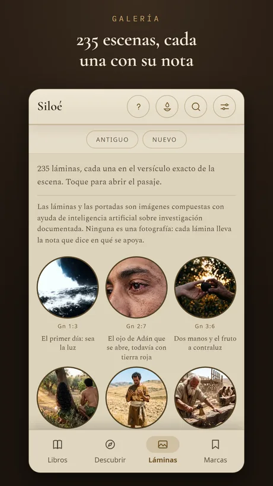
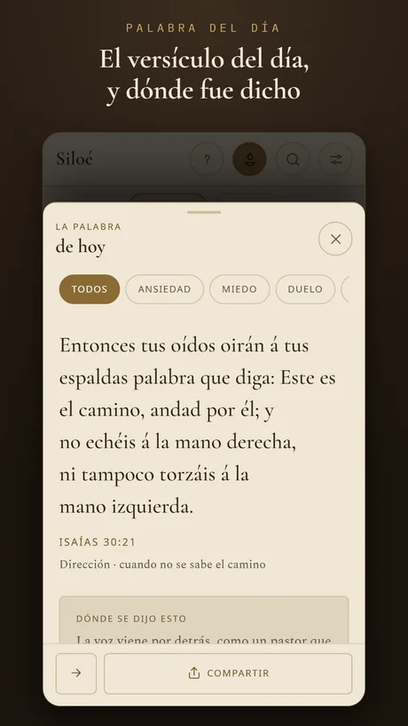
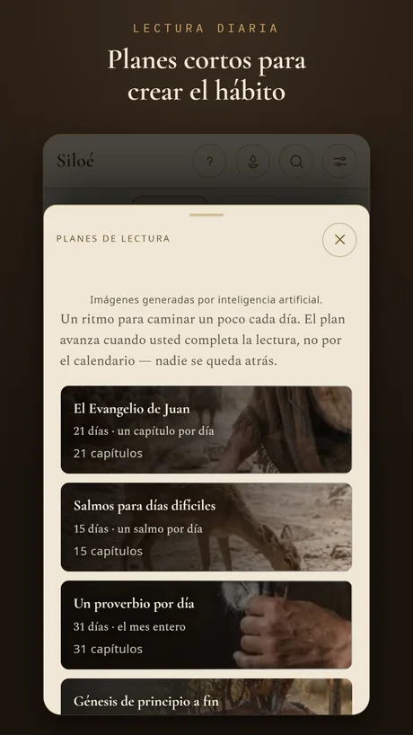

Las láminas
Mira la escena en el versículo exacto.
Son 235 láminas, y cada una aparece en el versículo de la escena que representa. Lees Mateo 14 y ves a Pedro hundiéndose en la tormenta, ahí mismo, junto al texto.

Santa Biblia Ilustrada
La Biblia completa, sin internet y sin anuncios, ilustrada con 235 láminas, cada una en el versículo exacto de la escena.
Gratis para leer · ediciones adicionales en compra única, sin suscripción · en 9 idiomas


La Biblia para leer, ver, escuchar y estudiar — del primer versículo al original hebreo y griego.
Las láminas
Son 235 láminas, y cada una aparece en el versículo de la escena que representa. Lees Mateo 14 y ves a Pedro hundiéndose en la tormenta, ahí mismo, junto al texto.
La nota de cada escena
Cada lámina trae una nota con la base del dibujo: el versículo, la excavación, el texto antiguo. Donde la investigación no sostiene un detalle, la nota también lo dice.
La galería
Recorre la Biblia por sus imágenes, libro a libro, y por la galería de personajes. Toca una escena y Siloé abre el pasaje.

La Biblia de estudio
Contexto histórico, preguntas para el debate, curiosidades y conexiones con otros pasajes, capítulo a capítulo. Y una guía para tu grupo o célula, que preparas y llevas en PDF.

Hebreo y griego
Como en una Biblia interlineal: la lectura y el sentido de cada palabra, la raíz, la morfología y el número Strong. En la edición Investigador, la concordancia muestra todas las apariciones de cada palabra, libro a libro.
La traducción
En portugués, el texto es la Bíblia Livre, traducción brasileña hecha a partir de textos de dominio público — la Almeida de 1819 y de 1911, el griego de Scrivener y de Nestle y el Códice de Leningrado —, en sus formas tradicional y crítica. Cada idioma tiene su propia traducción de dominio público o de licencia libre.

Escucha la Biblia
Siloé lee el capítulo con la voz de tu móvil y marca el versículo que se está leyendo. Es narración sintética, no la grabación de un locutor — y funciona sin conexión.

La Palabra del día
La Palabra del día viene con la nota que cuenta quién lo dijo, dónde y cuándo. Elige por tema — ansiedad, miedo, duelo — y compártela en una tarjeta.

Planes de lectura
De «Empieza aquí» a la Biblia en un año, con recordatorio diario. El Evangelio de Juan en 21 días, Salmos para días difíciles, un proverbio al día.

En el iPad
En el iPad, las láminas ganan espacio y la lectura es cómoda como en un libro. Marcas, notas y colecciones en cinco colores, todo guardado en tu dispositivo.

La edición Gratuita no caduca. Ilustrada, Completa e Investigador son compras únicas, sin suscripción: cada una incluye todo lo de la anterior, y quien sube de edición paga solo la diferencia.
Las pantallas de la aplicación, tal como aparecen en la App Store.








Las marcas, las notas y lo que leíste se quedan en el dispositivo; nada va a ningún servidor nuestro. La aplicación no pide cuenta y no muestra anuncios.
Sí. La edición Gratuita trae la Biblia entera y no caduca. Ilustrada, Completa e Investigador son compras únicas, sin suscripción; quien sube de edición paga solo la diferencia.
Sí. En el iPhone y en el iPad el texto viene dentro de la aplicación. Internet solo se usa cuando compras una edición o abres un enlace de las notas.
En portugués, la Bíblia Livre, traducción brasileña hecha a partir de textos de dominio público — Almeida de 1819 y de 1911, el griego de Scrivener y de Nestle y el Códice de Leningrado —, en sus formas tradicional y crítica. En cada uno de los demás idiomas, una traducción de dominio público o de licencia libre.
No. Siloé trae el canon protestante; los deuterocanónicos y las adiciones griegas de Ester y de Daniel no están en esta edición.
En 9: portugués de Brasil y de Portugal, inglés, español, francés, italiano, alemán, ucraniano y coreano — la Biblia y los menús de la aplicación. En cada idioma, una traducción de dominio público o de licencia libre.
No. Son imágenes compuestas con ayuda de inteligencia artificial a partir de investigación documentada, y cada una trae la nota que dice en qué se basa. El texto bíblico no pasa por inteligencia artificial.
¿Otra duda? Escribe a contato@outcomeanalytics.com.br.
Descárgala gratis y lleva la Biblia entera en el bolsillo.